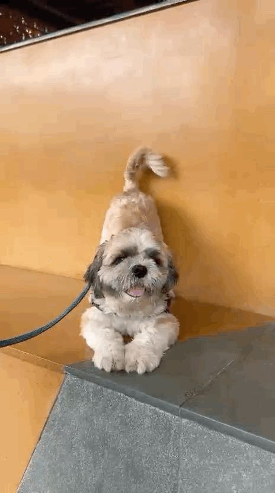
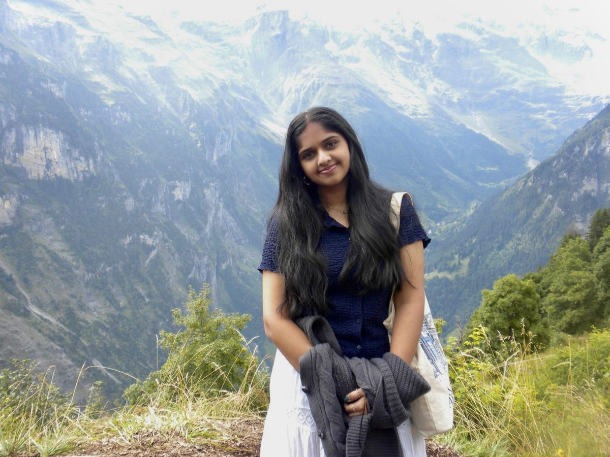
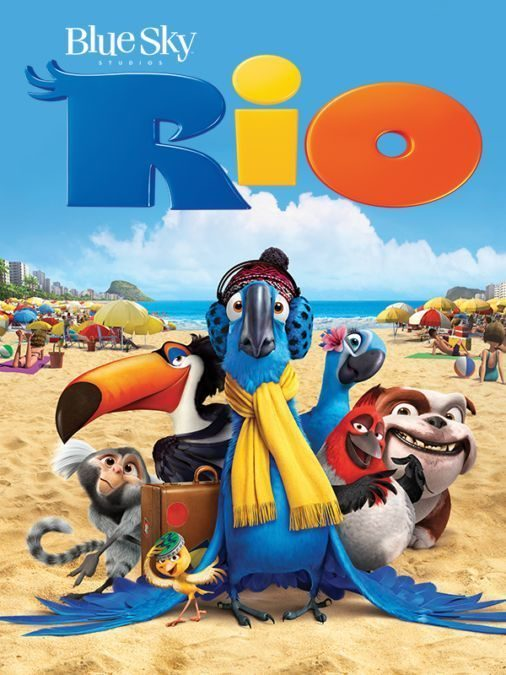
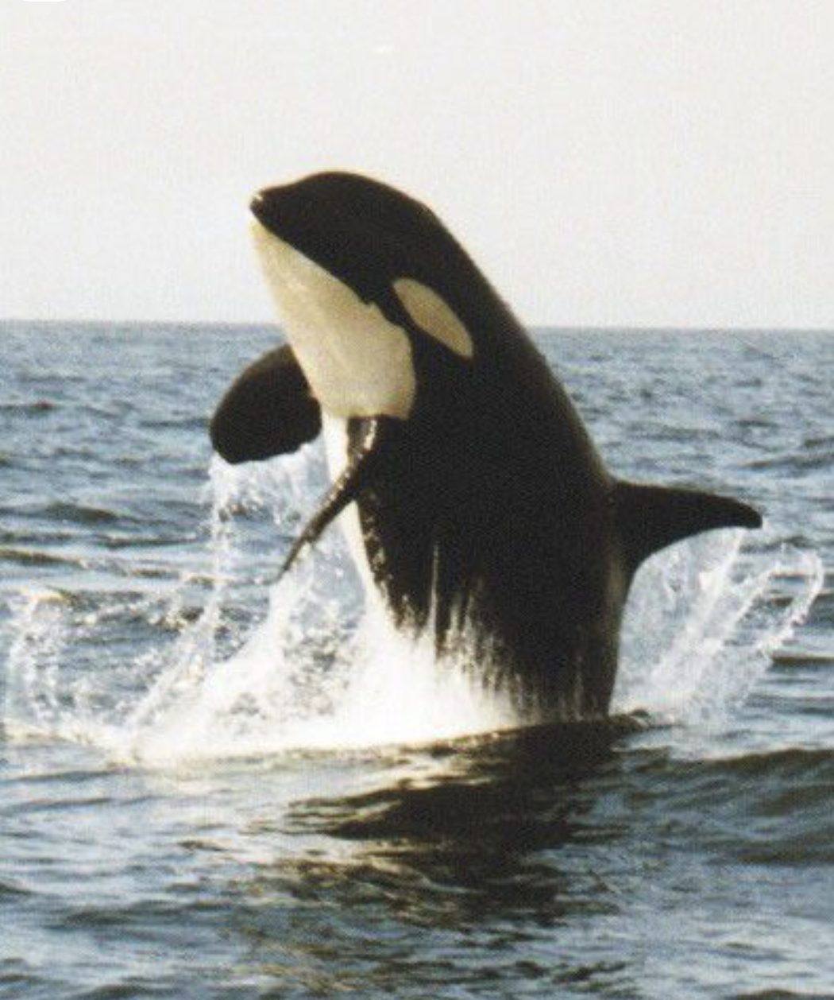

hi, i'm devika!
in a nutshell, i'm an extroverted introvert. half of me wants to stay home, cook something new, and watch tv shows until the couch has a permanent dent. the other half wants to be somewhere i've never been, meeting people i've never met, trying things i can't pronounce. that second half has gotten me to 33 countries so far.
i grew up in sugar land, texas, after my parents moved to the us when i was five months old. the rest of me, rapid fire: aggressively not a morning person, a baker, a collector of old cameras (my grandpa's 1961 yashica is the crown jewel), crafty to a fault — ceramics, painting, my own nails — loud about soccer when champions league is on, and always hunting for a new restaurant or café with my friends. my favorite movie is rio.
on paper: i study statistics & data science at carnegie mellon with a minor in business, and i'm currently an analyst at frame data & ai, building production AI systems for energy clients. what pulled me into data is the sheer possibility of it — it's one skill i can point at any problem i find interesting, whether that's the healthcare research i do at cmu, energy, or the animals and oceans i've cared about since i was a kid. my favorite kind of work is taking a messy, ambiguous problem and turning it into something people actually use.
i'm hoping something here starts a conversation — a role, a project, or even just a restaurant recommendation. my inbox is always open.
with love,
devika




RANDOM BUCKET LIST
- eat a british chinese takeaway
- see the lantern lights
- go to sweet tomato again
- swim with orcas in norway
- eat an irish spice bag
- try culver's
- learn how to play true american